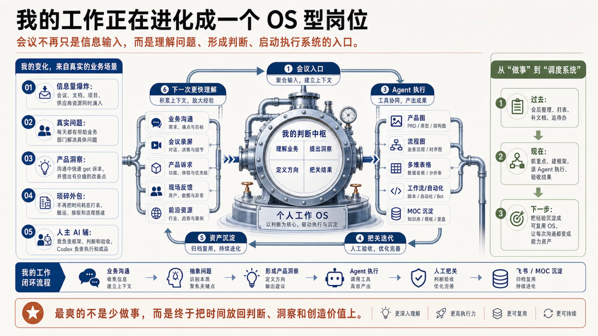
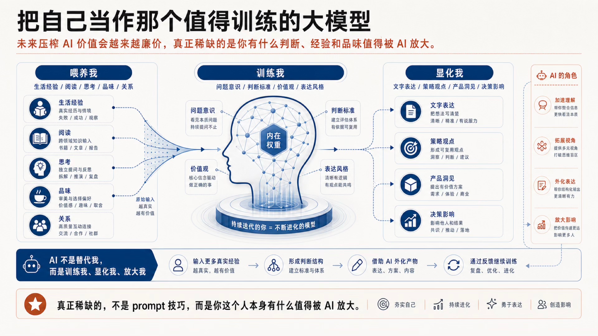

01这半年，我改变的不是工具清单
回看这半年，定期逼自己把最近的学习和思考凝结出来，还是挺重要的。每隔一段时间回头看，能明显感受到自己的认知在迭代：不是又多会了几个工具，而是对“我到底要怎么和 AI 一起工作”这件事，慢慢长出了自己的哲学。
最早我也和很多人一样，把进步理解成：Prompt 再写清楚一点，背景材料再塞多一点，模型再换新一点。它们当然有用，但有一天我突然意识到，这些更像是在练习使用一支滴管——每次吸一点上下文，对准一个问题，滴出一个答案。
滴管没有错。刚开始时，它甚至是最好的入口。可当 AI 开始进入真实工作、真实生活，问题就变了：我不可能每天重新解释自己是谁、现在在做什么、什么答案算好，也不可能把每一次不错的结果都留在聊天记录里等它消失。
于是我开始从滴管走向水管：不再把 AI 当成一个随叫随到的回答器，而是给它稳定入口、上下文、工具、边界、验收点和沉淀出口。模型还是那个模型，但工作方式已经完全不同。
02滴管与水管，差的不只是效率
这个比喻我越想越喜欢，因为它没有把新旧方式说成高低之分，而是两种不同的供给方式。
一次任务，一次供给
- 每次手动复制背景和要求。
- 结果依赖当下这一次表达是否完整。
- 好答案停在对话框里，很难复用。
- 人的角色主要是提问和接收。
持续流动，持续沉淀
- 上下文按需接入，不必每次重讲。
- 工具、权限和验收规则一起工作。
- 结果进入文档、知识库或下一流程。
- 人的角色上移到判断、取舍与把关。
水管真正改变的，不是“AI 一次能做更多”，而是工作开始有连续性。上一次的选择、修改和反馈，不再只是一段历史，而会变成下一次的起点。
当然，水管也不会凭空创造好水源。如果输入只有二手摘要、平均观点和从没落到现实里的想象，那么系统越顺畅，只会越稳定地产出平庸。管道放大的是供给，也放大供给里的杂质。
03Harness 是分水岭，但不用先学成架构师
最近越来越多人开始说 Harness。我的理解很朴素：模型是发动机，Harness 是让发动机真正装上车、沿着道路抵达目的地的整套约束和连接。
它至少回答四件事：
当前任务、必要背景、个人偏好和历史决策，怎样被准确地送到这一轮。
搜索、文档、代码、表格或其他工具，在什么权限边界内被使用。
哪些步骤可以自动继续，哪些判断必须回来问人，什么叫验收通过。
不是只在聊天里生成一段文字，而是进入真正的交付物与后续流程。
所以我会开玩笑说：Prompt 和 Context Engineering，只要学得够晚，可能就不用把它们当作独立学科来学了。不是说它们不重要，而是它们正在被收进更完整的系统里，变成默认存在的基础设施。
普通人也不必先把所有技术架构弄清楚才开始。最重要的是起一个真实流程：找一件你反复在做、结果可以验收、上下文会积累的事，把入口、执行、把关和沉淀先接起来。Harness 不是一张架构图，它首先是一条跑得起来的路。
一个好的 Harness，不会让人的判断消失；它会把判断应该出现的位置，暴露得更清楚。
04从“协作宪法”到“个人工作 OS”
如果说协作宪法定义的是边界，那么个人工作 OS 解决的就是重复执行。
重大判断、真实感受、价值取舍仍由人完成；AI 负责显化、提速和扩展视角。
我现在越来越习惯把一段工作拆成下面这个闭环：
-
真实入口
会议、沟通、现场观察与新问题进入系统。
-
形成判断
理解业务、识别本质、定义方向与验收标准。
-
Agent 执行
搜索、整理、制图、写作、搭建和多轮迭代。
-
人工把关
判断好坏、补关键缺口、控制风险并确认结果。
-
资产沉淀
把模板、方法、反馈与成品放回可复用系统。
-
下一次更快
不是从零开始，而是站在上一次经验上继续。
在这个闭环里，会议也不再只是信息输入。它是理解问题、形成判断、启动执行系统的入口。岗位因此不只是“做更多事”，而更像在调度一套会逐渐长出记忆的系统。

点击放大查看05OS 化地沉淀可插拔的个人上下文
水管要持续工作，需要稳定的上下文。但“积累上下文”不是把所有聊天记录倒进一个巨大文件，也不是每次把全部人生经历喂给模型。
我更愿意把个人上下文想成四层可以按需插拔的模块：
长期角色、价值观、表达语气、审美偏好与不可越过的边界。
当前目标、利益相关方、现实约束、时间窗口与已经做过的决策。
模板、清单、Skills、常用结构，以及我验证过确实有效的工作步骤。
我改过什么、拒绝过什么、为什么不满意，以及最后什么结果真的成立。
“可插拔”很重要。写文章时接入表达与案例模块，做方案时接入业务与判断标准，规划旅行时接入兴趣、节奏和体验偏好。不是上下文越多越好，而是此刻真正相关的那部分，能不能被准确召回。
这个过程很像把玩一块璞玉：不是一次雕刻就完成，而是在一次次使用、修改和反馈里，包浆越来越厚。AI 所谓“沾染上你的气息”，也不是因为你写了一段漂亮的自我介绍，而是它反复看见了你的选择。

点击放大查看06入了门之后，要进入 token 的丰盛状态
“Token 丰盛”不是无限制地消耗算力，也不是看见每个念头都要做成产品。它更像一种心理许可：不要再因为“做起来太麻烦”，过早掐灭刚冒出来的小想法。
以前，一个念头从“有点意思”走到“我真的想试试”，中间隔着搜索、整理、翻译、排版、写代码、找资料等一长串成本。现在这些执行摩擦突然变薄了。于是更值得训练的能力，变成了能不能接住念头、辨认其中真正有意思的部分，再迅速给它一个可以被验证的形状。
Iberia 旅行：半小时接住一个念头
一次准备伊比利亚旅行时，我用大约半小时把一个模糊想法扩成了一份很“我”的现场计划。它不只回答去哪儿，还把我真正关心的体验接了进来：
- 现场路线与每天的行动节奏
- 美食和适合记录的出片点
- 常用西班牙语的发音练习
- 行前人文补课与途中观察题
我满意的不是“AI 生成了一份攻略”，而是这个结果沾上了我的气息：我喜欢怎样理解一个地方、怎样在途中观察人与城市、怎样把旅行变成一次活的学习。只有路线没有这些，就只是平均答案。
进入这种丰盛状态之后，前一天的自己常常想不到，后一天的自己又能捣鼓出什么东西。每一个小想法都不一定要长大，但它终于有机会先发芽。
07新的工作方式：判断力 × 杠杆
换到甲方战略工作之后，我对这套方式有了更强的体感。真实问题每天都在发生，目标不是“按需求交一份东西”，而是理解到底发生了什么、什么最有价值、还能怎么提升、影响在哪里、杠杆最高的地方又在哪里。
- 什么问题值得解决
- 什么证据足以支持方向
- 什么结果才算真正成立
- 哪里必须承担最终责任
- 拎出重点、补充视角
- 搜索、整理与形成初稿
- 调用工具完成高频执行
- 根据把关意见快速迭代
人只守住那层近乎直觉、但又必须对结果负责的判断；执行交给 Agent，经过几轮把关，把它变成能被使用的方案、图、表、流程或文档。
最直接的变化不是“少做事”，而是时间终于回到了判断、洞察和创造价值上。过去真正喜欢的内容可能只占工作的一小部分，现在它几乎成了工作的主体。那种“跳着踢踏舞去上班”的快乐，不是因为任务变少，而是因为自己最想用的那块能力，终于被放到了正中央。
最爽的不是少做事，而是终于把时间放回判断、洞察和创造价值上。
08水管越粗，越要守住三条护栏
系统会放大能力，也会放大偏差。越能顺畅地调用 AI，越需要刻意保留几处“不自动”的地方。
-
01
持续给自己真实输入
亲自读完重要内容、和真实的人深入碰撞、走进现场、把感受写下来。没有这些，个人上下文迟早会变成对旧答案的循环引用。
-
02
判断层不外包
AI 可以列选项、找证据、做反方，但什么有价值、什么风险能承担、最后按不按按钮，仍然由人决定。
-
03
只沉淀经过反馈的东西
第一版产出不是资产。只有经过使用、验收、修改和复盘，确认为什么有效，才值得写回系统。
这也是为什么我仍然坚持 #Learn&Digest 的三件事：亲自消化内容，亲自连出新的线索，亲自动手写下来。AI 越强大，人越需要和真实的人、真实的世界面对面碰撞。水管负责输送，但水源还得自己去找。
09不用等准备好，先起一条自己的管道
如果你现在还主要用“滴管”，完全不用急着造一套庞大系统。选一件反复发生、你真的在意、结果也能看见的事，从最小闭环开始：
- 选一个稳定入口。例如每次会后整理、每周研究输出，或每次旅行前的主题规划。
- 准备一个个人上下文模块。只放与这件事直接相关的目标、偏好、边界和好结果样例。
- 设一个人工判断点。明确哪一步必须由你选择方向、检查证据或确认是否可用。
- 把反馈写回去。记录你改了什么、为什么改，以及下次怎样不必重来。
先让它跑一轮，再跑第二轮。OS 不是一次设计出来的，它是在重复使用中长出来的。
如切如磋，如琢如磨。
模型会继续变强，智力资源也会越来越丰盛。真正稀缺的，终究不是你能从 AI 那里压榨出多少，而是你自己有什么判断、经验和品味，值得被它放大。